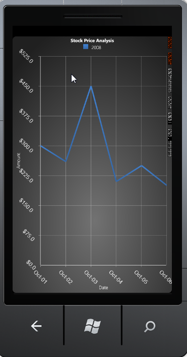

The axis label can be rotated to a custom angle using the LabelRotateAngle property. The following code describes setting rotation angle for the axis label to 45 degree.
|
[XAML]
<syncfusion:ChartArea.PrimaryAxis> <syncfusion:ChartAxis LabelRotateAngle="45"></syncfusion:ChartAxis> </syncfusion:ChartArea.PrimaryAxis>
<syncfusion:ChartArea.SecondaryAxis> <syncfusion:ChartAxis LabelRotateAngle="45"></syncfusion:ChartAxis> </syncfusion:ChartArea.SecondaryAxis> |
|
[C#]
//Intializing the Chart Area and Axis ChartArea area = new ChartArea(); ChartAxis primary = new ChartAxis(); ChartAxis secondary = new ChartAxis();
//Initializing the primary and secondary axes Label rotate angle primary.LabelRotateAngle = 45; secondary.LabelRotateAngle = 45;
area.PrimaryAxis = primary; area.SecondaryAxis = secondary; |

Figure 94 : LabelRotateAngle = "45"